CRVI000154Mal Waldron - Mal-1
Designed by Reid Miles · Prestige LP 7090 · 1956
Designed by Reid Miles · Prestige LP 7090 · 1956

CRVI000155Red Garland Trio - Groovy
Designed by Reid Miles · Prestige 7113 · 1957
Designed by Reid Miles · Prestige 7113 · 1957

CRVI000173Sonny Rollins - Work Time
Designer unknown · Prestige LP 7020 · 1955
Designer unknown · Prestige LP 7020 · 1955

CRVI000177Hank Mobley - Tenor Conclave
Designed by Bob Weinstock · Prestige LP 7074 · 1956
Designed by Bob Weinstock · Prestige LP 7074 · 1956

CRVI000178Sonny Rollins - Sonny Rollins
Designed by Bob Weinstock · Prestige LP 7029 · 1953
Designed by Bob Weinstock · Prestige LP 7029 · 1953
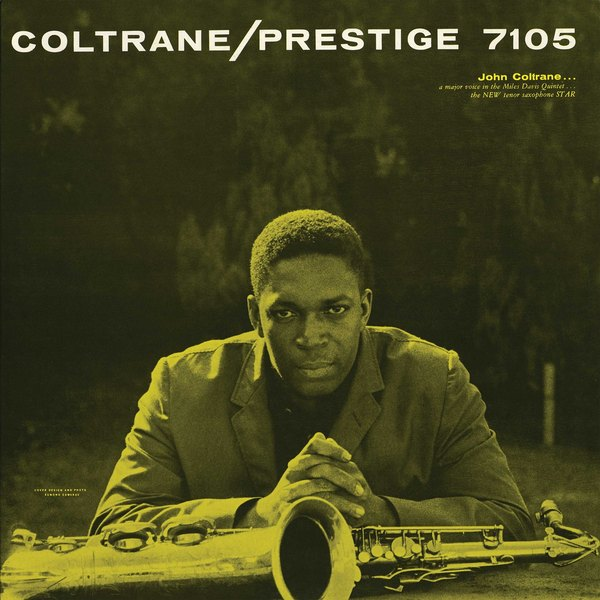
CRVI001154John Coltrane - Coltrane
Designed by Esmond Edwards · Prestige PRLP 7105 · 1957
Designed by Esmond Edwards · Prestige PRLP 7105 · 1957
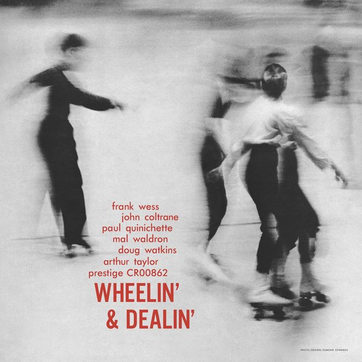
CRVI001157John Coltrane, Frank Wess, Paul Quinichette - Wheelin' & Dealin'
Designed by Esmond Edwards · Prestige PRLP 7131 · 1958
Designed by Esmond Edwards · Prestige PRLP 7131 · 1958
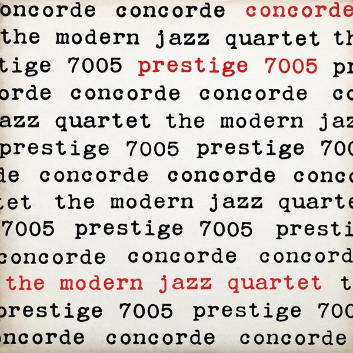
CRVI001283The Modern Jazz Quartet - Concorde
Designed by Reid Miles · Prestige 7005 · 1955
Designed by Reid Miles · Prestige 7005 · 1955

CRVI001284The Phil Woods Quartet - Woodlore
Photograph by Bob Weinstock · Prestige 7018 · 1956
Photograph by Bob Weinstock · Prestige 7018 · 1956
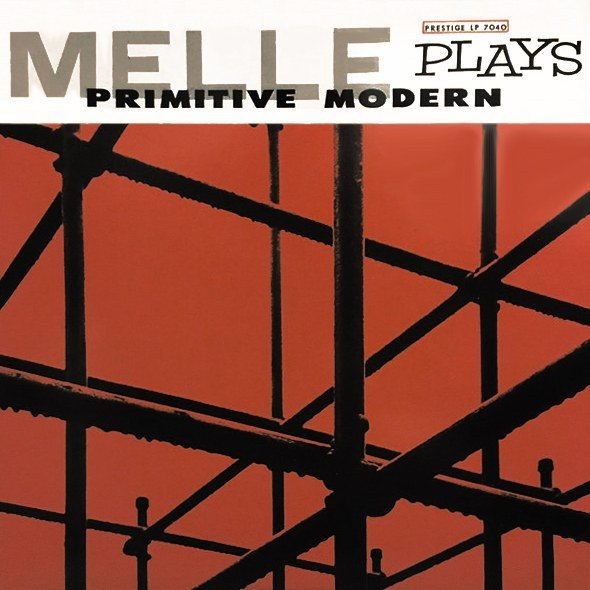
CRVI001285The Gil Mellé Quartet - Mellé Plays Primitive Modern
Designer unrecorded · Prestige 7040 · 1956
Designer unrecorded · Prestige 7040 · 1956
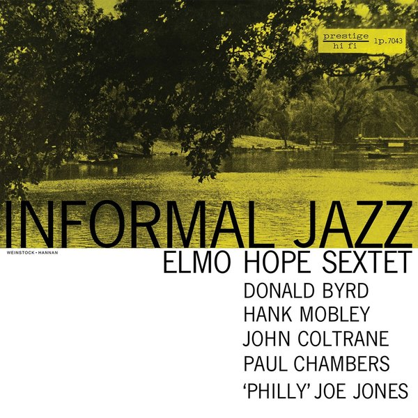
CRVI001286Elmo Hope Sextet - Informal Jazz
Designed by Tom Hannan, photograph by Bob Weinstock · Prestige 7043 · 1956
Designed by Tom Hannan, photograph by Bob Weinstock · Prestige 7043 · 1956
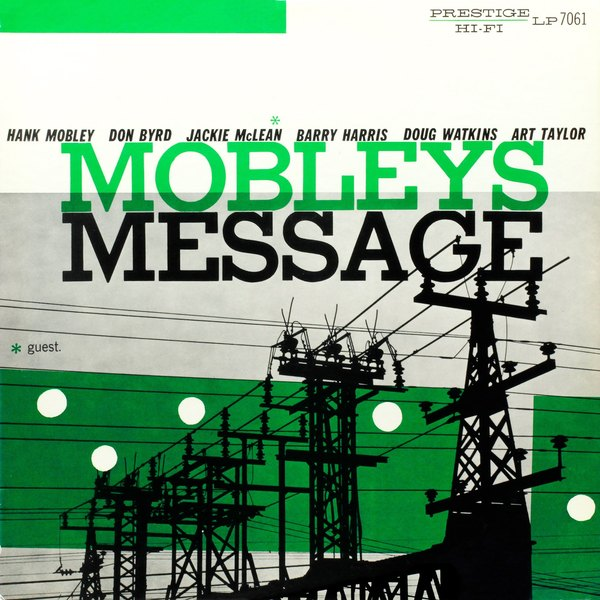
CRVI001287Hank Mobley - Mobley's Message
Designer unrecorded · Prestige 7061 · 1957
Designer unrecorded · Prestige 7061 · 1957
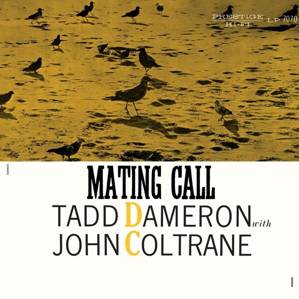
CRVI001288Tadd Dameron with John Coltrane - Mating Call
Designed by Esmond Edwards, Tom Hannan · Prestige 7070 · 1957
Designed by Esmond Edwards, Tom Hannan · Prestige 7070 · 1957
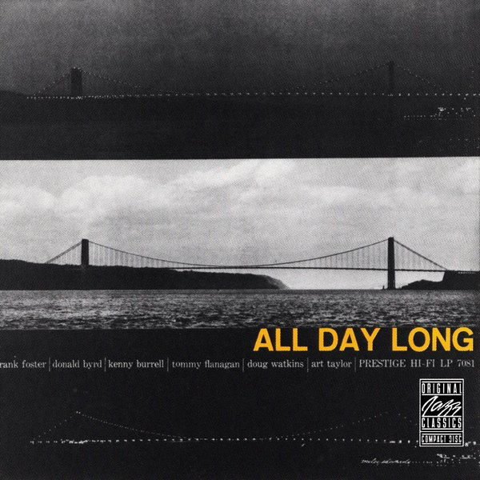
CRVI001289The Prestige All Stars - All Day Long
Designer unrecorded · Prestige 7081 · 1957
Designer unrecorded · Prestige 7081 · 1957
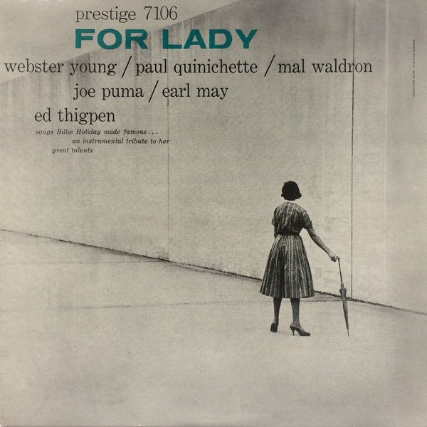
CRVI001290Webster Young - For Lady
Designed by Reid Miles, photograph by Esmond Edwards · Prestige 7106 · 1957
Designed by Reid Miles, photograph by Esmond Edwards · Prestige 7106 · 1957
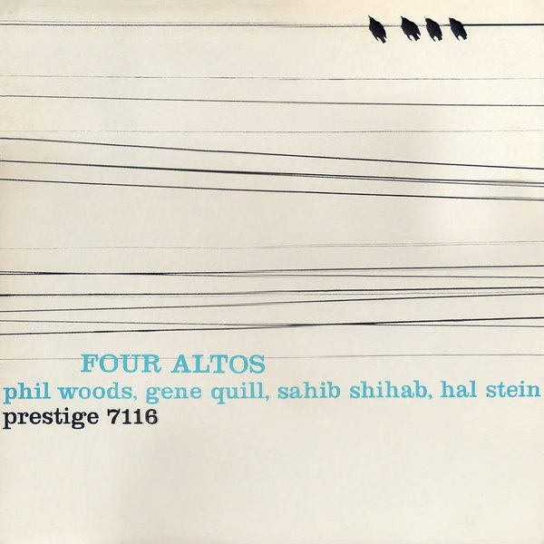
CRVI001291Phil Woods, Gene Quill, Sahib Shihab, Hal Stein - Four Altos
Designed by Reid Miles · Prestige 7116 · 1958
Designed by Reid Miles · Prestige 7116 · 1958

CRVI001292Herbie Mann, Bobby Jaspar - Flute Flight
Designed by Marc Rice, photograph by Esmond Edwards · Prestige 7124 · 1957
Designed by Marc Rice, photograph by Esmond Edwards · Prestige 7124 · 1957
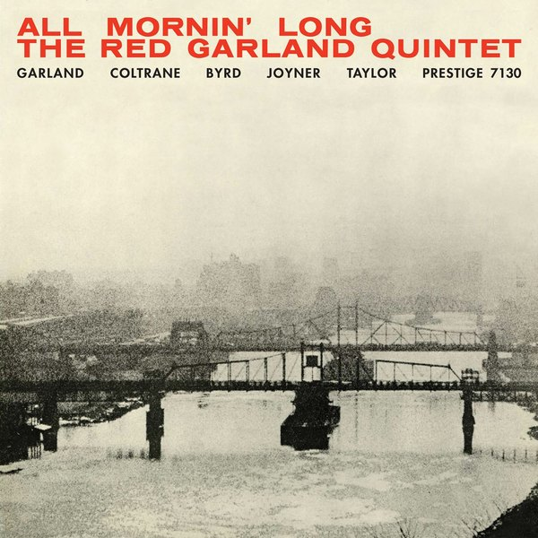
CRVI001293The Red Garland Quintet - All Mornin' Long
Designed by Esmond Edwards · Prestige 7130 · 1958
Designed by Esmond Edwards · Prestige 7130 · 1958
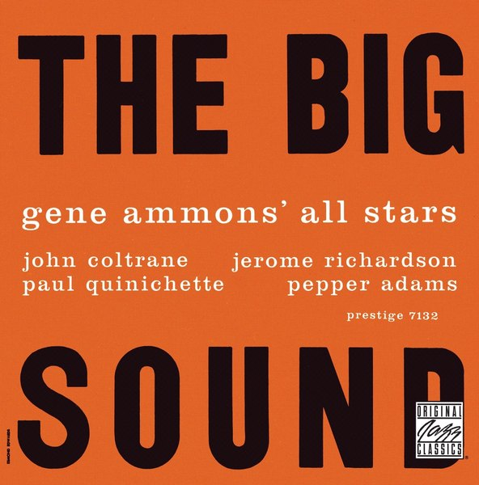
CRVI001294Gene Ammons' All Stars - The Big Sound
Designer unrecorded · Prestige 7132 · 1958
Designer unrecorded · Prestige 7132 · 1958
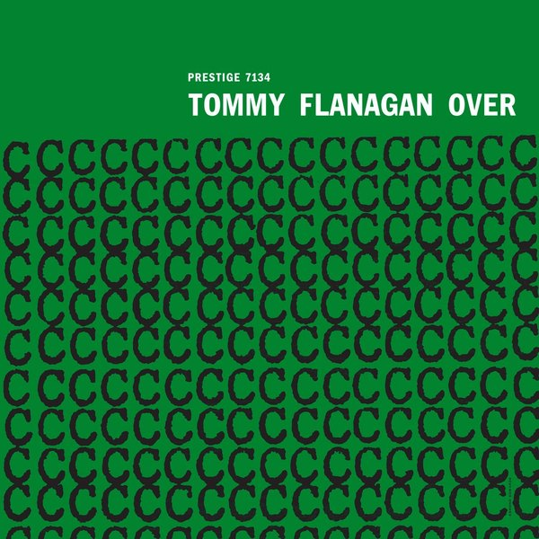
CRVI001295Tommy Flanagan Trio - Overseas
Designed by Esmond Edwards · Prestige 7134 · 1958
Designed by Esmond Edwards · Prestige 7134 · 1958
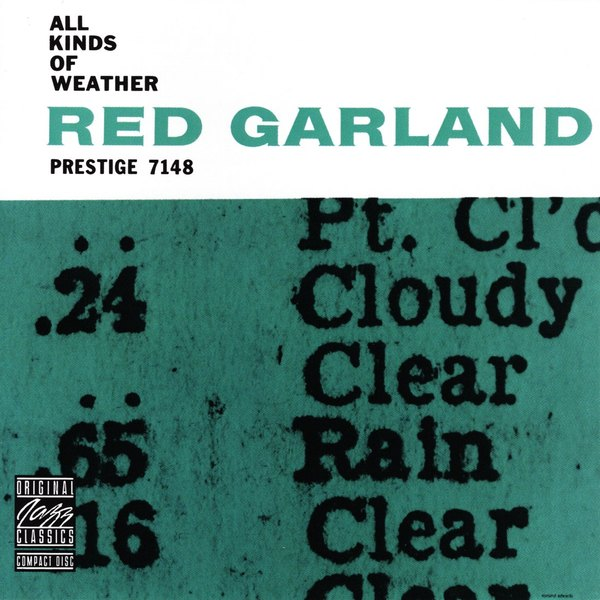
CRVI001296Red Garland - All Kinds Of Weather
Designer unrecorded · Prestige 7148 · 1959
Designer unrecorded · Prestige 7148 · 1959
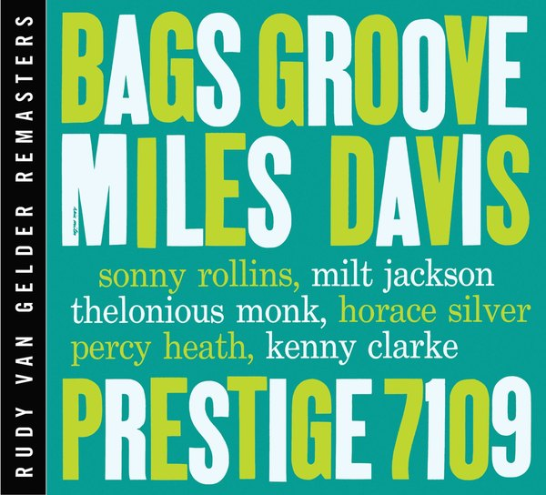
CRVI001315Miles Davis - Bags Groove
Designed by Reid Miles · Prestige 7109 · 1957
Designed by Reid Miles · Prestige 7109 · 1957
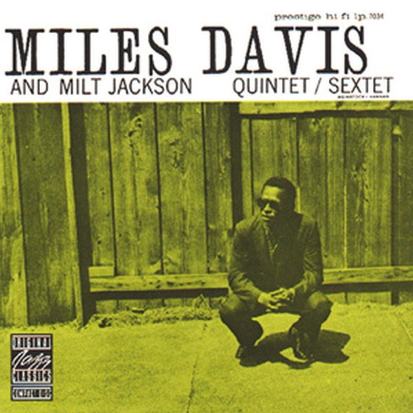
CRVI001317Miles Davis and Milt Jackson - Quintet/Sextet
Designed by Tom Hannan, Bob Weinstock · Prestige 7034 · 1957
Designed by Tom Hannan, Bob Weinstock · Prestige 7034 · 1957